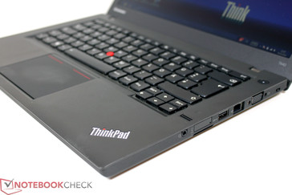
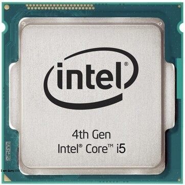
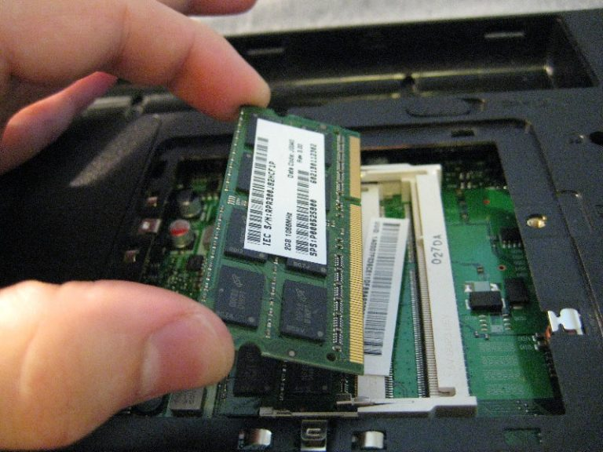
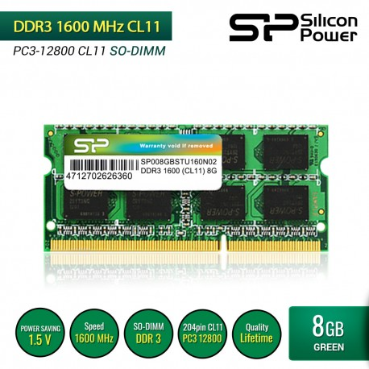
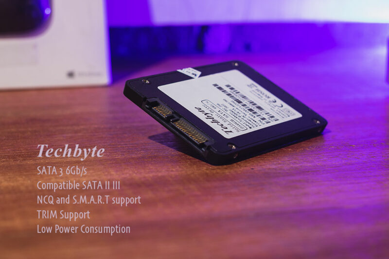
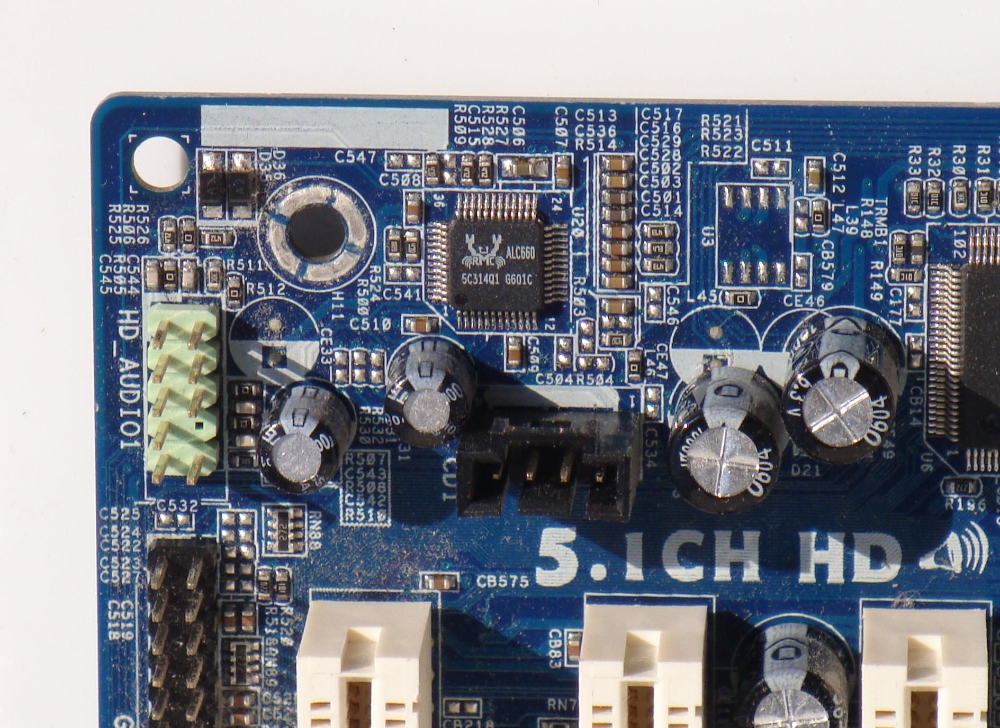
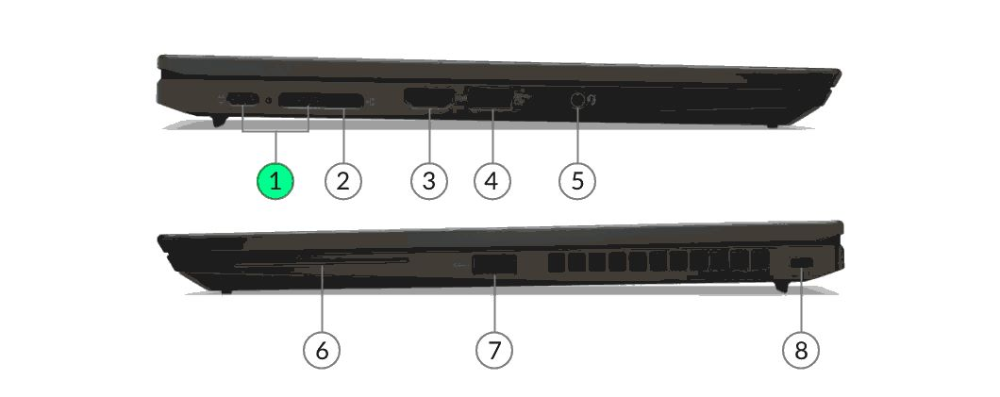
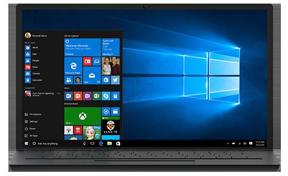
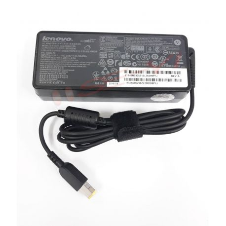
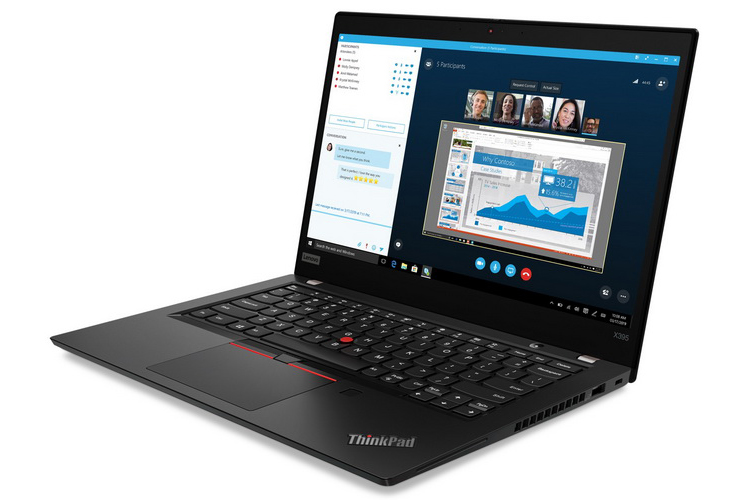

THINKPAD T440

Di era digital ini, teknologi telah merasuk ke dalam hampir setiap aspek kehidupan kita. Memiliki laptop adalah salah satu hal yang lumrah. Laptop menjadi alat penting dalam dunia modern, memungkinkan akses instan ke informasi, komunikasi, dan produktivitas di hampir setiap tempat. Dengan kemampuan berdaya tinggi, konektivitas internet, dan beragam aplikasi, laptop membuka pintu untuk berbagai aktivitas, mulai dari pekerjaan, pendidikan, hingga hiburan. Selain itu, laptop juga mendukung perkembangan teknologi lebih lanjut, termasuk dalam bidang riset, pengembangan perangkat lunak, dan teknologi informasi secara keseluruhan. Dengan laptop, kita memiliki akses ke dunia digital yang tak terbatas, dan peran teknologi ini terus berkembang dalam mengubah cara kita berinteraksi dengan dunia di sekitar kita.
Salah satunya dengan memilih ThinkPad T440 sebagai laptop second adalah pilihan yang bijak jika Anda mencari laptop yang dapat memberikan performa yang memadai untuk berbagai kebutuhan. Meskipun merupakan laptop yang telah ada beberapa tahun, ThinkPad T440 masih menawarkan performa yang solid dan dapat diandalkan. Ditenagai oleh prosesor yang tergolong lama, laptop ini mampu menjalankan tugas-tugas sehari-hari dengan lancar, termasuk penggunaan perkantoran, penjelajahan web, hingga multitasking ringan. Dengan bebragai pilihan RAM maupun pilihan storage, Anda akan mendapatkan responsifitas yang baik dan kemampuan penyimpanan yang cukup untuk aplikasi dan file. Selain itu, seri ThinkPad dikenal dengan desain tahan lama dan keyboard yang nyaman, membuatnya menjadi pilihan yang baik untuk penggunaan sehari-hari. Meskipun bukan laptop terbaru, ThinkPad T440 tetap merupakan laptop second yang dapat diandalkan dengan performa yang memadai.
PROSESOR
Prosesor Intel Core i5-4300U adalah salah satu prosesor dari generasi keempat (Haswell) Intel Core i5 yang diperkenalkan pada tahun 2013. Prosesor ini memiliki kemampuan dual-core dengan kecepatan dasar 1.90GHz dan dapat mencapai kecepatan hingga 2.50GHz dalam mode Turbo Boost. Prosesor yang dirancang untuk laptop dan perangkat mobile, menawarkan keseimbangan yang baik antara kinerja dan efisiensi daya. Dengan arsitektur 22nm, prosesor ini memiliki daya rendah yang menghasilkan panas yang minim, menjadikannya pilihan yang ideal untuk laptop tipis dan ringan. Selain itu, prosesor Intel Core i5-4300U dilengkapi dengan fitur keamanan dan manajemen yang kuat, menjadikannya cocok untuk penggunaan bisnis. Meskipun telah ada generasi prosesor yang lebih baru, Intel Core i5-4300U masih mampu menjalankan tugas sehari-hari dengan baik dan merupakan pilihan yang masuk akal untuk banyak pengguna laptop.
VGA
VGA Intel HD Graphics dengan kapasitas memori 2GB adalah solusi grafis terintegrasi yang biasanya ditemukan pada banyak laptop dan komputer desktop. Meskipun tidak sekuat kartu grafis diskrit, VGA Intel HD Graphics yang dilengkapi dengan 2GB memori dedikasi mampu memberikan kinerja grafis yang cukup baik untuk tugas-tugas sehari-hari, seperti penjelajahan web, penggunaan perkantoran, atau bahkan pemutaran video HD. Dengan kapasitas memori yang lebih besar, pengguna juga dapat mengalami kinerja yang lebih lancar dalam menjalankan aplikasi grafis ringan dan bahkan beberapa permainan dengan pengaturan grafis yang rendah hingga sedang. VGA Intel HD Graphics yang efisien dalam penggunaan daya juga menawarkan daya tahan baterai yang lebih baik pada laptop, membuatnya cocok untuk penggunaan mobile. Meskipun mungkin tidak cocok untuk tugas grafis berat, VGA ini merupakan pilihan yang memadai untuk sebagian besar kebutuhan penggunaan sehari-hari.
STORAGE
 Menggunakan RAM 8GB dan maksimal 16GB dengan jenis PC3-12800 1600MHz DDR3 adalah modul memori yang umumnya digunakan dalam komputer dan laptop. Dengan kapasitas 8GB, RAM ini memungkinkan untuk menjalankan berbagai aplikasi dan tugas secara bersamaan dengan lancar, termasuk pengolahan data, penjelajahan web, pengeditan foto, dan bahkan pemutaran video HD. Kecepatan 1600MHz menjadikannya cukup responsif, memungkinkan akses data yang lebih cepat dan waktu respons yang lebih baik dalam penggunaan aplikasi. Dengan standar DDR3 yang mapan, RAM ini juga kompatibel dengan sebagian besar sistem yang mendukung jenis memori ini, menjadikannya opsi yang baik untuk meningkatkan kinerja komputer Anda tanpa perlu mengganti seluruh sistem. RAM 8GB PC3-12800 1600MHz DDR3 merupakan pilihan yang cocok untuk pengguna yang memerlukan peningkatan memori yang handal dan terjangkau untuk sistem komputasi mereka. Namun, ThinkPad T440 ini hanya memiliki 1 slot RAM yang lumayan di budgte jika ingin upgrade ke RAM yang lebih tinggi.
Menggunakan SSD SATA 256GB dengan merk Techbyte adalah solusi penyimpanan data yang efisien dan handal. Dengan kapasitas penyimpanan yang cukup besar, SSD ini mampu menyimpan banyak data, mulai dari sistem operasi hingga aplikasi dan file penting lainnya. Kecepatan transfer data yang tinggi dan kinerja yang responsif membuat proses booting sistem lebih cepat dan aplikasi lebih responsif. Selain itu, SSD SATA menghadirkan keandalan yang tinggi dengan sedikit risiko kerusakan fisik yang umumnya terkait dengan HDD tradisional. Ini adalah pilihan yang baik untuk meningkatkan performa komputer Anda atau untuk digunakan dalam laptop atau desktop modern yang mengharapkan kinerja tinggi dan kecepatan dalam penyimpanan data.
AUDIO
Audio chipset HD Realtek codex ALC3232 adalah solusi audio yang unggul dengan kemampuan pemrosesan audio yang tinggi. Dengan teknologi canggih, chipset ini memberikan pengalaman audio yang berkualitas tinggi dengan reproduksi suara yang jernih dan mendalam. Ini adalah pilihan yang ideal untuk perangkat komputer, laptop, dan perangkat mobile yang mengharapkan kualitas audio terbaik, baik untuk mendengarkan musik, menonton film, atau berkomunikasi dalam panggilan konferensi. Selain itu, kemampuan pengurangan kebisingan dan teknologi canggih lainnya membuat chipset ini menjadi pilihan yang solid untuk mendukung audio dalam berbagai konteks penggunaan, sehingga pengguna dapat menikmati pengalaman audio yang istimewa. Chipset audio HD Realtek codex ALC3232 adalah pilihan yang sangat baik untuk memastikan kualitas audio yang luar biasa pada berbagai perangkat elektronik dilengkapi software dolby audio versi 2.
KEYBOARD

Keyboard ThinkPad adalah salah satu yang paling diakui dan dihargai di dunia komputasi. Dikenal dengan desainnya yang tahan lama, keyboard ini menjadi ciri khas laptop-laptop ThinkPad. Keyboard ini menawarkan pengalaman mengetik yang nyaman dengan jarak jari yang optimal dan respons yang baik. Tombol-tombolnya biasanya dirancang dengan kualitas tinggi dan daya tahan, dan mereka seringkali memiliki fitur anti-splatter yang melindungi dari tumpahan cairan. Dengan desain tahan air dan backlit pada beberapa model, keyboard ThinkPad dirancang untuk digunakan dalam berbagai kondisi dan situasi. Ini adalah salah satu alasan mengapa pengguna menganggap keyboard ThinkPad sebagai yang terbaik di kelasnya, baik untuk penggunaan sehari-hari maupun untuk produktivitas yang tinggi.
PORT
Memiliki beberapa port yang mempermudah dalam mobilitas dan sangat memadai dengan laptop seri lama.
1. Port audio combo jack
2. Port ethernet
3. Port Smart Card
4. Port SIM Card 3G dengan memasang di slot WWAN
5. Port SD Card Reader
6. Port USB 3.0
7. Port USB Type A 3.0
8. Port VGA
9. Port display
10. Port Kensigton Lock sebagai gembok laptop
SISTEM OPERASI
Windows 10 Pro adalah sistem operasi yang dirancang untuk penggunaan profesional dan bisnis, yang menawarkan berbagai fitur dan kemampuan yang membedakannya dari versi Windows 10 Home. Salah satu fitur menonjolnya adalah kemampuan untuk bergabung dengan domain jaringan, yang memungkinkan pengguna untuk mengelola banyak perangkat dalam lingkungan bisnis dengan lebih mudah. Windows 10 Pro juga menyertakan fitur keamanan tambahan, seperti BitLocker untuk mengenkripsi data dan Windows Defender yang canggih untuk melindungi perangkat dari ancaman malware. Fitur lainnya termasuk Remote Desktop yang memungkinkan akses ke perangkat dari jarak jauh, kemampuan untuk menjalankan program Windows 7 di mode Windows XP, dan Group Policy Management yang memberikan kontrol lebih besar dalam pengaturan perangkat. Dengan semua fitur ini, Windows 10 Pro cocok untuk pengguna yang memerlukan tingkat keamanan dan pengelolaan yang lebih tinggi dalam lingkungan bisnis dan profesional.
Mengunakan BIOS Phoenix BIOS SC-T v2.1 adalah versi dari BIOS yang dikembangkan oleh Phoenix Technologies. BIOS (Basic Input/Output System) adalah perangkat lunak yang disematkan pada motherboard komputer dan bertanggung jawab untuk menginisialisasi perangkat keras komputer dan memuat sistem operasi. Versi BIOS Phoenix BIOS SC-T v2.1 mungkin memiliki berbagai fitur, perbaikan, dan peningkatan kinerja yang khusus untuk kompatibilitas dengan berbagai motherboard dan perangkat keras. Ini mungkin termasuk antarmuka pengguna yang memungkinkan pengguna untuk mengatur pengaturan BIOS, seperti pengaturan boot dan konfigurasi perangkat keras lainnya. Setiap versi BIOS mungkin memiliki perbedaan dalam kemampuan dan tampilan, tetapi semuanya berfungsi sebagai jembatan penting antara perangkat keras komputer dan sistem operasi. BIOS Phoenix BIOS SC-T v2.1 mungkin dirilis untuk meningkatkan kinerja, keamanan, dan stabilitas komputer yang mendukungnya..
BATERAI DAN ADAPTOR
Memakai Adaptor ac-to-dc yang dapat memasok daya yang diperlukan ke komputer sampai 45 Watt. Sedangkan, Baterai pada Thinkpad T440 ini berupa Li-Ion dengan double baterai dengan 6cell yang hanya dapat bertahan selama 2 jam yang dipakai multitasking.
TAMPILAN
Memiliki beberapa keunggulan di tampilan, seperti ;
1. Menggunakan layar HD resolusi 1366 x 768 px (32 bit) (60Hz) (14 inci) yang lumayan berat sekitar 1.72kg.
2. Memiliki kontrol kecerahan dan adaya mikrofon di sisi kanan body laptop.
3. Dilengkapi webcam untuk foto dan video yang maksimal 720p dengan 30fps.
4. Dengan body material plastik poli karbonat dengan keseluruhan warna hitam pekat.
5. Engsel dengan material metal aluminium yag menambah kesan kokoh dan tidak ringkoh dalam menbuka laptop.